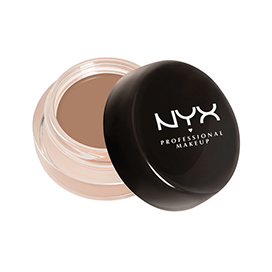
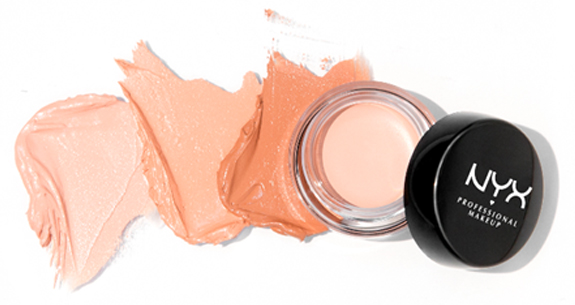

PRO-TIP:
Apply to skin with Nyx Professional Makeup Dual Fiber Precision Brush (PROB09) and blend it. Tap firmly under the eye to blow the product out.
DARK CIRCLE CONCEALER
Finish:Matte Format: Cream Coverage: Medium
A serious solution for one of beauty’s most challenging problems! No fancy names just a product that can be counted on to do the job. The product glides on without looking thick or obvious. The subtle hint of orange counteracts the blue of the dark circles while natural skin-toned pigments work in unison to provide the ultimate coverage. Enhanced with coconut oil and Chine clay for the perfect mmoisturise & light reflecting particles. 
 Dark Circles can now never see
Dark Circles can now never see the light of day


complete the look